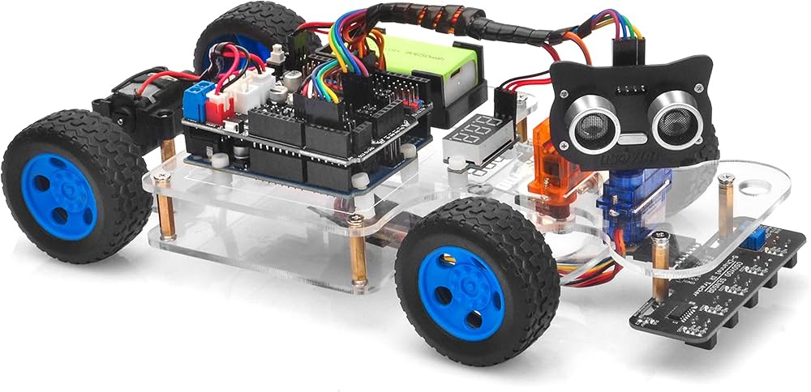
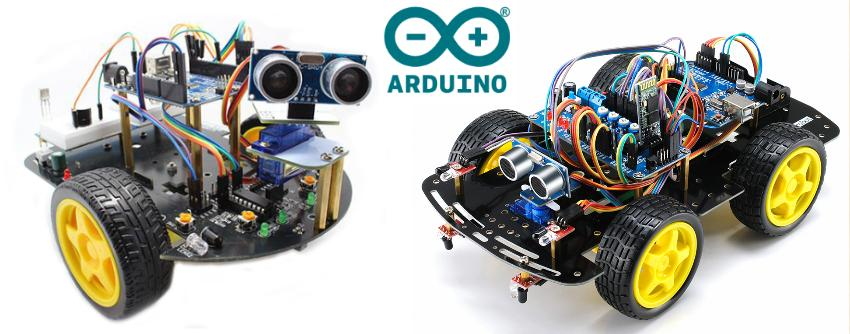

La robotique est un domaine passionnant qui combine l'électronique, la mécanique, et l'informatique pour créer des machines capables d'accomplir des tâches.
Les robots d'aujourd'hui utilisent des technologies d'intelligence artificielle pour apprendre, évoluer et prendre des décisions autonomes, rendant chaque interaction plus intelligente et fluide.
Les bras robotiques sont utilisés pour effectuer des tâches complexes avec une précision exceptionnelle, que ce soit dans les chaînes de production ou dans des applications médicales.
Regardez nos robots en action dans ce court métrage et voyez comment ils interagissent avec leur environnement et accomplissent des tâches autonomes.
La robotique transforme le monde dans de nombreux secteurs, notamment la santé, l'industrie, l'agriculture, et même l'exploration spatiale. Elle permet d'automatiser des tâches complexes, d'améliorer la sécurité, et de développer des solutions innovantes pour résoudre des problèmes quotidiens, ouvrant ainsi de nouvelles possibilités pour l'avenir de l'humanité.
Restez informé des dernières innovations en robotique et participez à nos projets passionnants. Inscrivez-vous à notre newsletter ou contactez-nous pour plus d'informations !
Contactez-nous